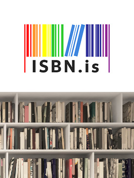
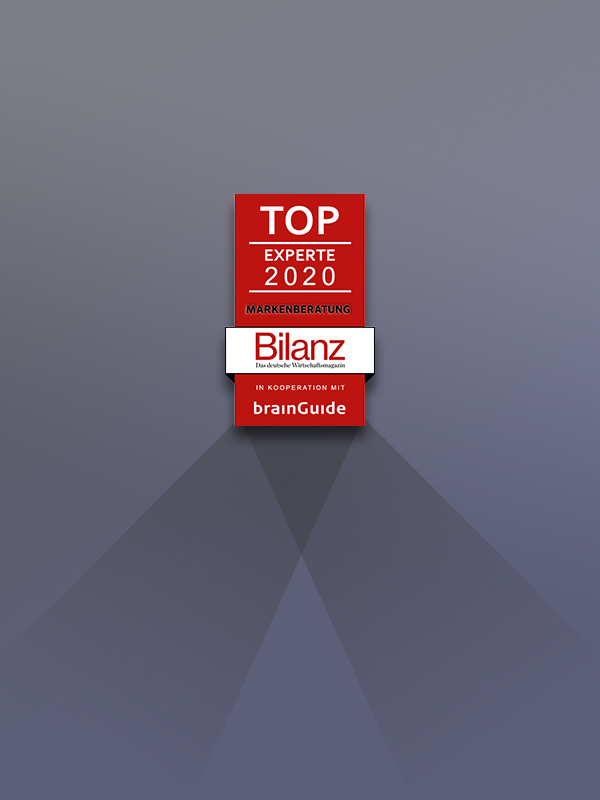
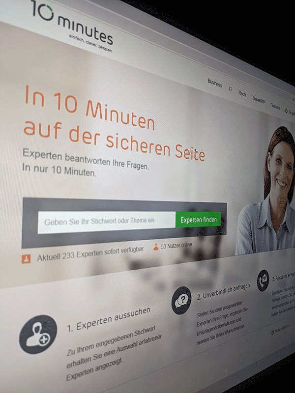

What I do
I have well over 10 years' experience building software for clients all over the world. The longer I deal with web development, the more I have to realize, in reference to I. Newton's famous quote: what I know is a drop, what I don't know, an ocean. Nevertheless, it is a very satisfying feeling to travel at least a part of the ocean and to set sail again and again for new adventures.
I stand for a service portfolio that is not only oriented towards the specific needs of the customer, but that above all focuses on your target group - the user. My core competencies include professional consulting and process planning of digital presences as well as their target-oriented implementation.
Below is a quick overview of my main technical skill sets and technologies I use.
Want to find out more about my experience? Check out my online resume and project portfolio.
I stand for a service portfolio that is not only oriented towards the specific needs of the customer, but that above all focuses on your target group - the user. My core competencies include professional consulting and process planning of digital presences as well as their target-oriented implementation.
Below is a quick overview of my main technical skill sets and technologies I use.
Want to find out more about my experience? Check out my online resume and project portfolio.
HTML & CSS
As the fundamental technology behind everything we see in a web browser, the evolution HTML has made with CSS is still impressive. Hard to imagine that I've been using it for well over 20 years.
Vanilla JavaScript
I already bought my first JavaScript book in 1996, although I didn't even have my own PC at that time. But I was already so fascinated by the client-side possibilities at that time.
PHP
In the backend I have the most experience with PHP so far. Despite its age, for me it is still one of the most adaptable languages in the field of web development.
MySQL
Just like PHP, on the backend I have most of my database experience with SQL. My passion is databases in general and I have always had very good experiences with this RDBMS.
Git & Bash
It's hard to imagine life without both, just amazingly tools. Git is freaking awesome and although there is still so much to learn it is just fun.
APIs
The possibility that the capabilities of a computer program can be used by others is just thrilling and it's a lot of fun not only to use APIs but also to create your own.
React, Node.js & npm
List skills/technologies here. You can change the icon above to any of the 1500+ FontAwesome 5 free icons available. Aenean commodo ligula eget dolor.
Python
Even though I just started to learn Python, the language inspires me from the beginning. It is indispensable and enormously powerful, especially for data science and ML.
Featured Projects

brainGuide Answers
On this platform, users can have their questions answered by qualified experts for free. These in turn increase their visibility and strengthen their expertise.
Client: brainguide AG

Bilanz Top-Experte
In this case study, the feasibility of a top expert seal for the German business magazine Bilanz was run through.
Case Study for brainGuide and Die Welt

10minutes
10minutes was an amazing project that completely redefined consulting. In 10-minute consulting sessions with the help of experts to an individual solution.
Client: 10minutes AG